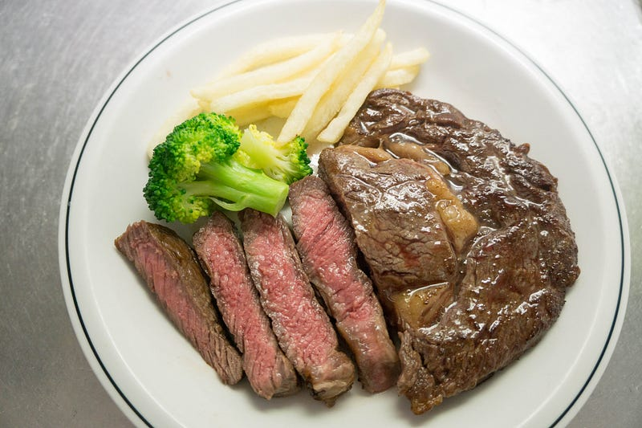
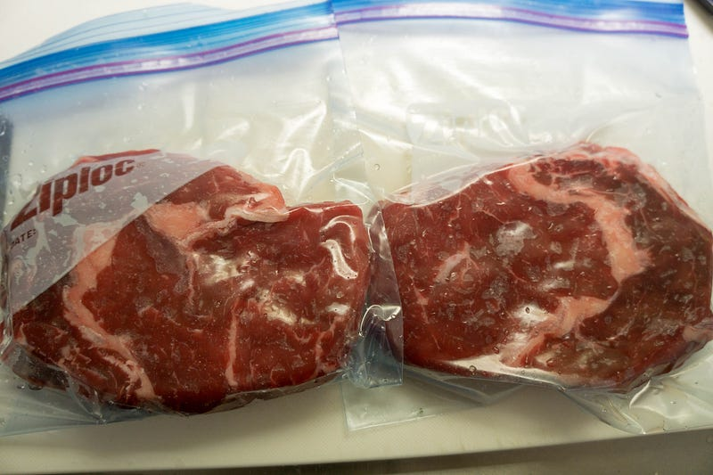
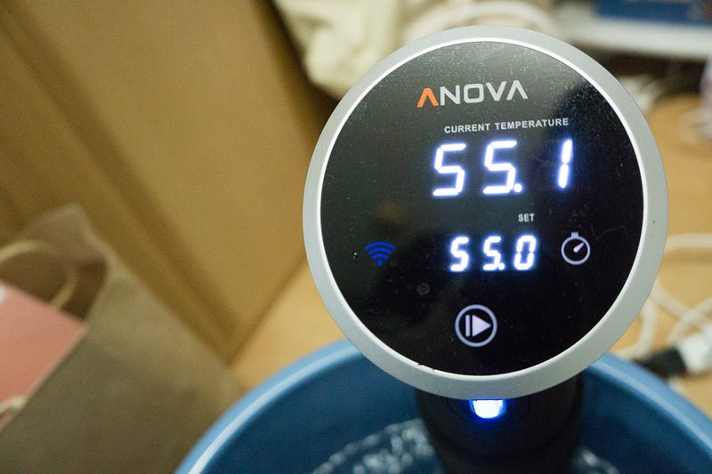
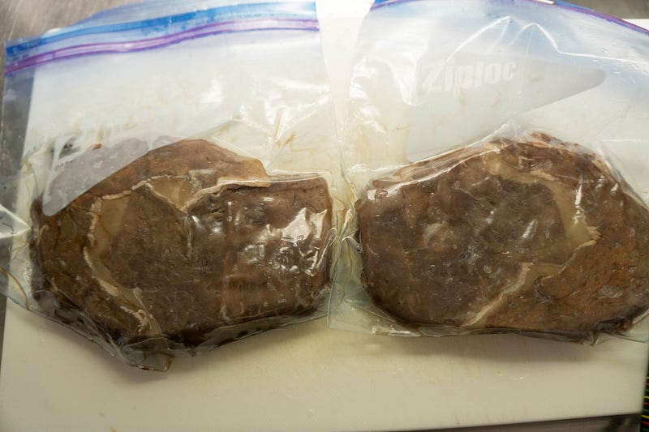
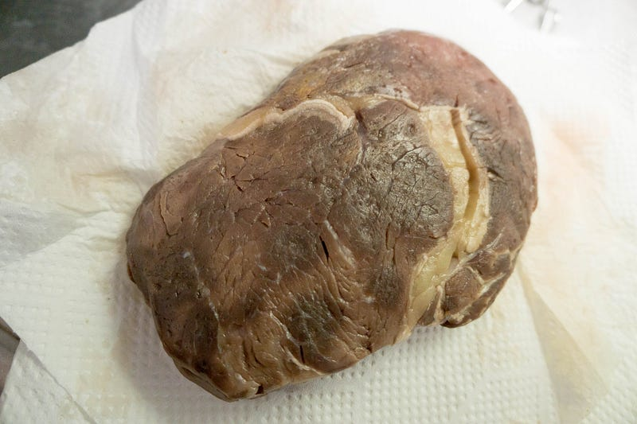
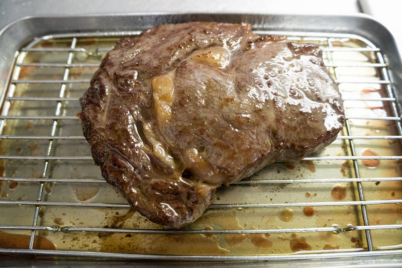
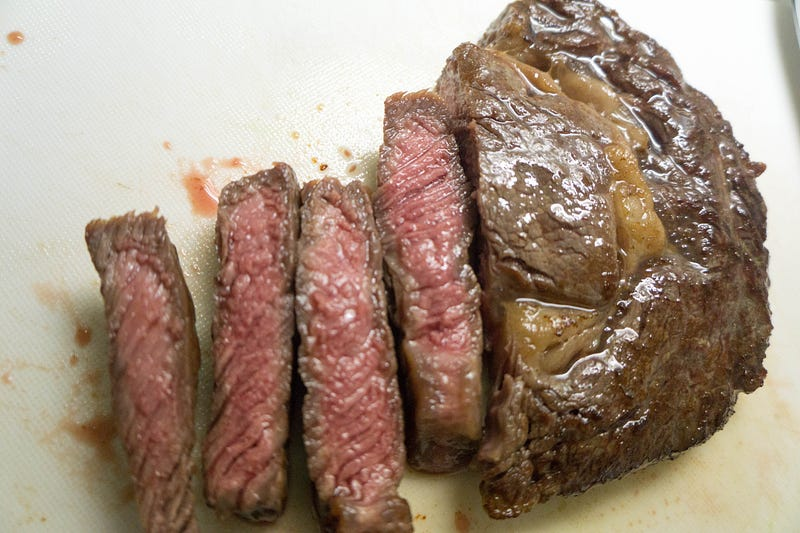

anovaで牛ロースステーキ
anovaで牛ロースステーキ
豚肉を別に生で食べたい欲求はそれほどないが、牛肉は是非ミディアムレアで食べたい。そうだ、anovaでステーキ焼こう。

前回はこちら
まぁ出オチみたいなもんですけど、とりあえず記録。買ったのは2枚で1500円くらいのオージービーフ ロースステーキ肉。厚さは3cmなかったので、紙の部類だったが、まぁここは文句は言うまい…
自分がステーキを通常焼く時は焼いているうちに流れ落ちてしまう分を考慮して結構強めに塩を効かせるんだけど、低温調理の場合はジップロックの中にある間に結構浸透しそうな気もして、通常のステーキの時より気持ち少なめに。0.8%とか計ってもいいけど、ここは直感…
塩をしておいて、ペーパータオルでドリップを吸収。今回はその前に他の調理をしていた都合で30分くらい放置した。

ジップロックに入れて可能な限り空気を抜いて。

55℃で30分。

お湯からあげたばかりの肉はちょっと美味しそうには見えない。

お肉はちゃんと余分な水分をふきとってあげましょう。
レシピを見ているとだいたい仕上げには「煙が出るくらい熱くしたスキレットを使う」とか書いてあるんだけど、我が家にはテフロン加工のフライパンしかないし、そいつらをガンガン空炊きするとテフロンはげるしで良いことがない。
ということで、別の鍋で（他の素揚げに使ってた）油を200℃くらいにあたためておいて、そいつを使って焼くというか揚げる、という手法でフィニッシュすることに。
油の中で表裏、各30秒〜1分くらい。今回は紙の厚さなので横面は端折る。

そして、ここから5分ほど休ませる。…とか言ってたら子供らが「お父ちゃん、お肉は〜〜〜？」って大声出してくるのでしょうがなく3分くらいで切り上げ、最終工程 “Fat Flash”
Resting meat leads to a juicier interior, but it means you end up losing that crispy, sizzling crust in the process…www.seriouseats.com
要は肉を休ませた後に最後にあっつい油をかけて最後の最後の仕上げをする。油が超熱いので写真用に肉を切るのが辛かった…

ほい。
盛りつけして、ほい。できあがり。
味の感想としては今回初めてanovaで低温調理方面で会心の一撃を放った、と言える（これまではコンフィがよくできていた）。超うまい。脂身とかも良い感じにほぐれてるし、ジューシーだし、柔らかいし、何より焼く時にほとんど何も考えずに焼けて大変良い。
マイナス材料としてはやはり最初に塩をするところから正味1時間半かかってようやく完成するということか。いきなりフライパンに突っ込めば10分くらいでできるし…
とは言え、週末にちょっと美味しいもの食べたいなーという時には大変良いと言える。今度は機会があったら厚さ3cm超の肉で試してみたい。
※ WiFi タイプになります。900W スマホと連動してお鍋の水温をコントロール。どこからでも調理 ポンプ速度：毎分7〜8リットル、360度回転のポンプ アプリで操作可能 設定温度に達したらスマホにお知らせ アプリはAppストアUSな…amzn.to
次回はこちら